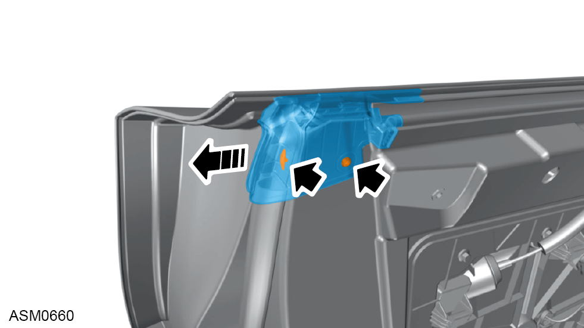

Door Assembly - Left Side
Print
Operation Code: 10.15.07-02
Removal
- Open door and lower window.
- Disconnect battery. Refer to procedure.
- Disengage harness connector securing door harness to body harness.
- Remove M8x30 torx bolt securing door check strap to vehicle. Torque 18 Nm.
 CAUTION: Using assistance, support door to prevent damage to the door and hinge assemblies.
CAUTION: Using assistance, support door to prevent damage to the door and hinge assemblies.
- Remove M8x30 bolts (x2) securing upper door hinge to door. Torque 24 Nm.
- Remove M8x30 bolts (x2) securing lower door hinge to door. Torque 24 Nm.
- Using assistance remove door.
CAUTION: Place on secure and suitable surface to prevent damage.
Do not carry out further disassembly if component is removed for access only.
- Lift door waist seal to access door seal underneath.
- Disengage clips (x21) securing door seal to door and remove door seal.
- Remove M6x30 bolts (x2) securing door trim to door panel. Torque 5 Nm.
- Carefully pull door trim upwards then away from door to access connections.
NOTE: Only pull door trim away from door enough to gain access to door trim connections.
- Refer to illustration for door trim mounting locations.
NOTE: Door trim insulation has been made transparent for image clarity.
- Disconnect harness connector connecting door trim harness to door wiring harness.
- Disengage door release outer cable from bracket.
- Disengage door release cable from door release handle.
- Remove door trim.

- Disengage clips (x2) securing door waist seal corner piece to door and remove corner piece.
- Remove door waist inner seal secured to inner door.
- Remove door waist outer seal secured to outer door.
- Disconnect harness connector from window motor.
- Remove M5x22 screws (x3) securing window motor to water deflector panel.
- Remove window motor from water deflector panel.
- Disconnect harness connector from door speaker.
- Disconnect harness connector from door pressure sensor.
- Disconnect harness connector from door mirror harness.
- Disengage clips (x2) securing harness to water deflector panel.
- Disengage grommets (x3) from water deflector panel.
NOTE: Push grommets through the panel into the door.
- Remove M6x16 bolts (x15) securing water deflector panel to door panel. Torque 5 Nm.
- Pull through harness and door release cable as you remove the water deflector panel from the door.
- Remove water deflector panel.
- Position door glass to gain access to door glass fixings.
- Remove screws (x2) securing door glass to regulator.
- Carefully release door glass from retaining clamps (x2) on regulator.
- Carefully tilt door glass and remove from door.
- Remove grommets from bottom of door to access bolts.
- Remove M6x16 bolts (x2) securing window lift mechanism to door. Torque 7 Nm.
- Remove M6 nuts (x2) securing window lift mechanism to door. Torque 3.5 Nm.
NOTE: Restrain studs with screwdriver whilst tightening nuts.
- Manually operate window lift mechanism.
- Remove window lift mechanism.
- Remove clips (x3) securing door mirror harness to door panel.
- Partially remove door corner trim access panel to access door mirror fixings.
- Remove M6x20 bolts (x3) securing door mirror to door panel. Torque 10 Nm.
NOTE: When the final bolt is removed support the door mirror so it does not drop unexpectedly.
- Carefully pull harness through door panel to remove door mirror from door panel.
- Remove door mirror.
- Remove M6x20 bolt securing lower window guide rail to door. Torque 7 Nm.
- Remove M6x12 bolts (x2) securing upper window guide rail to door inner mounting bracket. Torque 10 Nm.
- Remove window guide rail.
- Disengage clip securing door latch module pull rod to lock assembly.
NOTE: Only applicable for the driver side door.
- Remove pull rod from door latch module.
- Disengage exterior door handle release cable from bracket.
- Disengage exterior door handle release cable from door latch module lever.
- Disconnect harness connector from door latch module.
- Remove M6x12 torx bolts (x3) securing door latch module to door panel. Torque 7 Nm.
- Remove door latch module.
- Disengage clip securing pull rod to lock assembly.
NOTE: Inner door skin not illustrated for clarity.
- Disengage release cable from bracket.
- Disengage release cable from exterior door handle latch release lever.
- Remove M6 nuts (x3) securing exterior door handle to door panel. Torque 10 Nm.
- Remove exterior door handle.
Installation
- Installation is the reverse of removal procedure except for the following:
- Renew all discarded cable ties.
- Perform a function check of the left side door electrical switches and lamps.
- Check door gap and flush tolerances - see Alignment Specifications for Body Panels and Closures section.
- Check door glass alignment and reset window one touch facility. Refer to procedure.